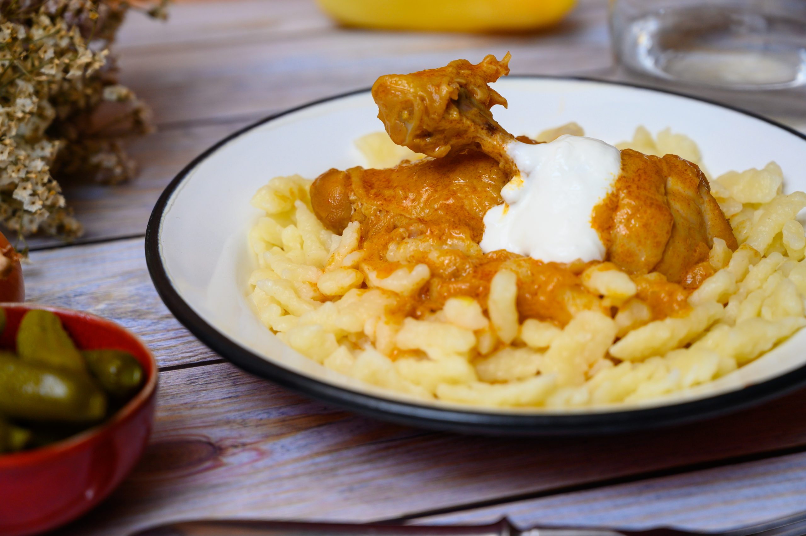

Chicken Paprikash

Description
Chicken is braised in a brick-red sauce of sweet paprika and chicken stock in our version of a classic Hungarian dish.
Ingredients
- 1⁄4 cup lard or canola oil
- 1 (3-4 lb.) chicken, cut into 8 pieces
- 1 large yellow onion, minced
- 3 tbsp. Hungarian sweet paprika, plus more for garnish
- 2 cups chicken stock
- 2 plum tomatoes, cored, seeded, and cut into 1″ pieces
- 1 Italian frying pepper, stemmed, seeded, and cut into 1″ pieces
- 1⁄2 cup sour cream, for serving
- Kosher salt and freshly ground black pepper, to taste
Steps
- Melt lard or heat oil in a 6-qt. saucepan over medium-high heat.
- Season chicken with salt and pepper. Working in batches, cook, flipping once, until browned, 8–10 minutes. Transfer chicken to a plate; set aside.
- Add onion to pan; cook, stirring occasionally, until soft, about 8 minutes.
- Add paprika; cook, stirring, for 2 minutes.
- Return chicken and its juices to the pan.
- Add stock, tomatoes, and Italian frying pepper; bring to a boil.
- Reduce heat to medium-low and simmer, partially covered, until chicken is fully cooked, about 30 minutes.
- Transfer chicken and sauce to a serving platter; spoon sour cream over top and garnish with more paprika.